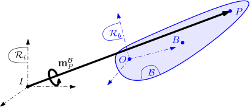
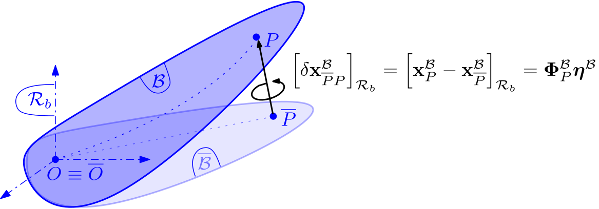
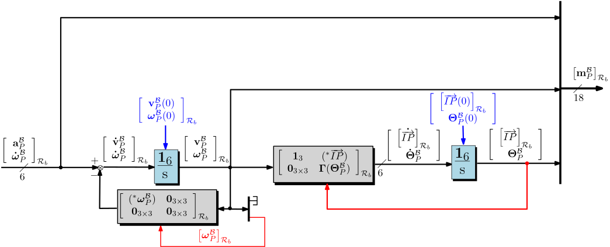
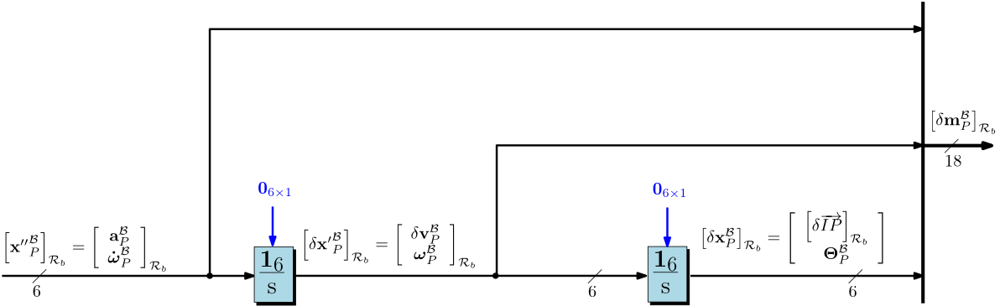
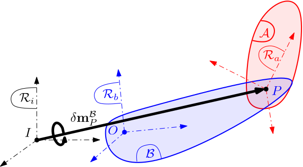

General notations, assumptions and definitions
Contents
General notations
Rigid body

A calligraphic letter (for example $\mathcal{B}$) is used to label a body. The same uppercase letter ($B$) is used to denote its center of mass. The subscript with the same lower case letter ($b$) is used to denote its body frame and reference axes (for example, $\mathcal{R}_b = (O,\mathbf{x}_b,\mathbf{y}_b,\mathbf{z}_b)$ is the body frame attached to $\mathcal B$ at the reference point $O$ ). $\mathcal{R}_i = (I,\mathbf{x}_i,\mathbf{y}_i,\mathbf{z}_i)$ is the inertial frame. In addition, the following notations will be used for a rigid body:
| $\mathbf{P}_{a/b}$ | $3 \times 3$ Direction Cosine Matrix (DCM) of the rotation from frame $\mathcal{R}_a$ to frame $\mathcal{R}_b$, that contains the coordinates of vectors $\mathbf{x}_a$, $\mathbf{y}_a$, $\mathbf{z}_a$ expressed in frame $\mathcal{R}_b$. |
| $\overrightarrow{IP}$ | The vector from point $I$ to point $P$ ($3 \times 1$ vector, $m$) |
| $\boldsymbol{\Theta}^\mathcal{B}$ | The Euler angle vector of the attitude of the frame $\mathcal R_b$ w.r.t. $\mathcal R_i$ for a given rotation sequence ($3 \times 1$ vector, $rad$) |
| $\mathbf P_{./i}(\boldsymbol \Theta^\mathcal{B})$ | The Euler angles to DCM conversion function (for the given rotation sequence): $\mathbf{P}_{b/i}=\mathbf P_{./i}(\boldsymbol \Theta^\mathcal{B})$. |
| $\boldsymbol\Theta(\mathbf{P}_{b/i})$ | The inverse function : $\boldsymbol{\Theta}^\mathcal{B}=\boldsymbol\Theta(\mathbf{P}_{b/i})$. |
| $\mathbf{v}^\mathcal{B}_P$ | Inertial velocity of body $\mathcal{B}$ at point $P$ ($3 \times 1$ vector, $m/s$). |
| $\boldsymbol{\omega}^\mathcal{B}$ | Angular speed of $\mathcal{R}_b$ with respect to $\mathcal{R}_i$ ($3 \times 1$ vector, $rad/s$). |
| $\mathbf{a}^\mathcal{B}_P$ | Inertial acceleration of body $\mathcal{B}$ at point $P$ ($3 \times 1$ vector, $m/s^2$). |
| $\mathbf{F}_{\mathcal{B/A}}$ | Force applied by body $\mathcal{B}$ on body $\mathcal{A}$ ($3 \times 1$ vector, $N$). |
| $\mathbf{T}_{\mathcal{B/A},P}$ | Torque applied by $\mathcal{B}$ on $\mathcal{A}$ at point $P$ ($3 \times 1$ vector, $Nm$). |
| $\mathbf{F}_{ext/\mathcal B}$ | Total external force applied to body $\mathcal{B}$ ($3 \times 1$ vector, $N$). |
| $\mathbf{T}_{ext/\mathcal B,P}$ | Total external torque applied to body $\mathcal{B}$ at the point $P$ ($3 \times 1$ vector, $Nm$). |
| $\left[\star\right]_{\mathcal R_b}$ | Projection of $\star$ (vector, wrench, tensor, model,...) in the frame $\mathcal R_b$. For a vector $\mathbf v$: $[\mathbf v]_{\mathcal R_b}=\mathbf{P}_{a/b}[\mathbf v]_{\mathcal R_a}$. |
| $\overline{\star}$ | Nominal value of $\star$ at equilibrium. |
| $\mathbf{W}_{\mathcal{B/A},P}$ | $6 \times 1$ wrench applied by $\mathcal{B}$ on $\mathcal{A}$ at point $P$: $\mathbf{W}_{\mathcal{B/A},P}=\left[\begin{array}{c}\mathbf{F}_{\mathcal{B/A}} \\ \mathbf{T}_{\mathcal{B/A},P}\end{array}\right]$. |
| $\mathbf{W}_{ext/\mathcal B,P}$ | $6 \times 1$ total external wrench applied on $\mathcal{B}$ at point $P$. |
| $\mathbf{W}_{\mathcal{./A},P}$ | $6 \times 1$ local wrench applied on $\mathcal{A}$ at point $P$. |
| $\mathbf{W}_{\mathcal{A/.},P}$ | $6 \times 1$ local wrench applied by $\mathcal{A}$ at point $P$. |
| ${\left.\frac{d \mathbf{v}}{dt}\right\vert }_{\mathcal{R}}$ | Time-derivative w.r.t. frame $\mathcal{R}$ of the vector $\mathbf{v}$ $\left(\left[\frac{d \mathbf{v}}{dt}\vert_{\mathcal{R}}\right]_{\mathcal R}=\frac{d\left[ \mathbf v\right]_{\mathcal{R}}}{dt}\right)$ . |
| $\mathbf{\dot v}^{\mathcal B}$ | Time-derivative of the vector $\mathbf v^{\mathcal B}$ in the body frame: $\mathbf{\dot v}^{\mathcal B}={\frac{d \mathbf{v}^{\mathcal B}}{dt}\vert}_{\mathcal{R}_b}$ |
| $\mathbf{x}^\mathcal{B}_P$ | $6 \times 1$ pose dual vector of body $\mathcal B$ at point $P$: $\mathbf{ x}^\mathcal{B}_P=\left[\begin{array}{c} \overrightarrow{IP}\\ \boldsymbol{\Theta}^\mathcal{B}\end{array}\right]$. |
| $\boldsymbol{\mathbf x'}^\mathcal{B}_P$ | $6 \times 1$ twist (dual vector) of body $\mathcal B$ at point $P$: $\mathbf{ x'}^\mathcal{B}_P=\left[\begin{array}{c}\mathbf{v}^\mathcal{B}_P \\ \boldsymbol{\omega}^\mathcal{B}\end{array}\right]$. |
| $\boldsymbol{\mathbf x''}^\mathcal{B}_P$ | $6 \times 1$ acceleration dual vector of body $\mathcal B$ at point $P$: $\mathbf{ x''}^\mathcal{B}_P=\left[\begin{array}{c}\mathbf{a}^\mathcal{B}_P \\ \boldsymbol{\dot\omega}^\mathcal{B}\end{array}\right]$. |
| $\mathbf m^\mathcal{B}_P$ | The $18$ components motion vector of body $\mathcal B$ at point $P$; for the purposes of notations: $\mathbf m^\mathcal{B}_P=\left[{\boldsymbol{\mathbf{x}''}^\mathcal{B}_P}^T\;\;{\boldsymbol{\mathbf x'}^\mathcal{B}_P}^T\;\;{\mathbf{x}^\mathcal{B}_P}^T\right]^T$ |
| $\boldsymbol{\Gamma(\Theta)}$ | The relation from angular velocity to Euler angle time-derivatives (for the given rotation sequence) $\dot{\boldsymbol\Theta}^{\mathcal B}=\boldsymbol\Gamma(\boldsymbol\Theta^\mathcal{B})[\boldsymbol\omega^\mathcal{B}]_{\mathcal R_b}$. |
| $m^{\mathcal{B}}$ | mass of body $\mathcal{B}$. |
| $\mathbf{I}^{\mathcal{B}}_P$ | $3 \times 3$ inertia tensor of body $\mathcal{B}$ at point $P$. |
| $\mathbf{D}^{\mathcal{B}}_P$ | $6\times 6$ static dynamic model of body $\mathcal B$ expressed at point $P$. |
| $\boldsymbol{\tau}_{PB}$ | Kinematic model between points $P$ and $B$: $\boldsymbol{\tau}_{PB}=\left[\begin{array}{cc} \mathbf{1}_3 & (^*\overrightarrow{PB})\\ \mathbf{0}_{3\times 3} & \mathbf{1}_3 \\ \end{array}\right]$. |
| $(^*\mathbf v)$ | Skew symmetric matrix associated with vector $\mathbf v$: if $\left[\mathbf v\right]_{\mathcal{R}}=\left[\begin{array}{c}x \\y \\ z\end{array}\right]$ then $\left[(^*\mathbf v)\right]_{\mathcal{R}}= \left[\begin{array}{ccc} 0 & -z & y\\ z & 0 & -x \\ -y & x & 0 \end{array}\right]$. |
| $\mathbf{r},\;\mathbf t$ | directions of the revolute, prismatic joint axes ($3\times 1$ vectors, $m$). |
| $\mathbf{\tilde r},\;\mathbf{\tilde t}$ | unit vectors along $\mathbf{ r},\;\mathbf{t}$ ($3\times 1$ vectors). |
| $\theta,\;\theta_0$ | angular configuration of a revolute joint, its initial value ($rad$). |
| $x,\;x_0$ | linear configuration of a prismatic joint , its initial value ($m$). |
| $\mathrm{s}$ | Laplace's variable. |
| $\mathbf{1}_n$ | Identity matrix $n \times n$. |
| $\mathbf{0}_{n\times m}$ | Zero matrix $n \times m$. |
| $\mathbf{0}$ | Null vector ($3 \times 1$). |
| $\mathbf{A}^T$ | Transpose of $\mathbf{A}$. |
| $\mathrm{diag}$ | Diagonal augmentation. |
| $\mathbf{P}_{a/b}^{\times 2}$ | Augmented DCM for dual vectors $\mathbf{P}_{a/b}^{\times 2}=\mathrm{diag}\left(\mathbf{P}_{a/b},\,\mathbf{P}_{a/b}\right)$. |
| $\mathbf P_{a/b}^{18}$ | Augmented DCM for motion vectors (non-linear case): $\mathbf P_{a/b}^{18}=\mathrm{diag}\left(\mathbf{P}_{a/b}^{\times 2},\;\mathbf{P}_{a/b}^{\times 2},\;\mathbf{P}_{a/b},\;\mathbf 1_3\right)$. |
| $\mathbf P_{a/b}^{\times 6}$ | Augmented DCM for motion vectors (linear case): $\mathbf P_{a/b}^{18}=\mathrm{diag}\left(\mathbf{P}_{a/b}^{\times 2},\;\mathbf{P}_{a/b}^{\times 2},\;\mathbf{P}_{a/b}^{\times 2}\right)$. |
| $\boldsymbol \tau_{PB}^{\times 3}$ | Augmented kinematic model for motion vectors (linear case): $\boldsymbol \tau_{PB}^{\times 3}=\mathrm{diag}\left(\boldsymbol \tau_{PB},\;\boldsymbol \tau_{PB},\,\boldsymbol \tau_{PB}\right)$. |
The reader will find in [1] (Chapter 3) the expressions of $\mathbf P_{./i}(\boldsymbol \Theta^\mathcal{B})$, $\boldsymbol\Theta(\mathbf{P}_{b/i})$, $\boldsymbol{\Gamma(\Theta)}$ and the basic background in kinematics and attitude parameterization.
Flexible body

According to the previous figure the internal deflection $\left[\delta\mathbf x^{\mathcal B}_{\overline P P}\right]_{\mathcal R_b}$ of the flexible body is expressed w.r.t to the body frame $\mathcal R_b$ attached to the reference point $O$ which is not deformed $O\equiv \overline O$ .
Due to this deflection, which is assumed to be small (and null at the equilibrium), we have to consider that the attitude, angular rates and angular acceleration depend on the point $P$ on the flexible body $\mathcal B$. So, for a flexible body, we will use the following additional notations :
| $\boldsymbol{\Theta}^\mathcal{B}_P$ | The Euler angle vector of the attitude of the body $\mathcal B$ at the point $P$ w.r.t. $\mathcal R_i$ for a given rotation sequence ($3 \times 1$ vector, $rad$) |
| $\boldsymbol{\omega}^\mathcal{B}_P$ | Angular speed of body $\mathcal B$ at the point $P$ with respect to $\mathcal{R}_i$ ($3 \times 1$ vector, $rad/s$). |
| $\mathbf{x}^\mathcal{B}_P$ | $6 \times 1$ pose dual vector of body $\mathcal B$ at point $P$: $\mathbf{ x}^\mathcal{B}_P=\left[\begin{array}{c} \overrightarrow{IP}\\ \boldsymbol{\Theta}^\mathcal{B}_P\end{array}\right]$. |
| $\boldsymbol{\mathbf x'}^\mathcal{B}_P$ | $6 \times 1$ twist (dual vector) of body $\mathcal B$ at point $P$: $\mathbf{ x'}^\mathcal{B}_P=\left[\begin{array}{c}\mathbf{v}^\mathcal{B}_P \\ \boldsymbol{\omega}^\mathcal{B}_P\end{array}\right]$. |
| $\boldsymbol{\mathbf x''}^\mathcal{B}_P$ | $6 \times 1$ acceleration dual vector of body $\mathcal B$ at point $P$: $\mathbf{ x''}^\mathcal{B}_P=\left[\begin{array}{c}\mathbf{a}^\mathcal{B}_P \\ \boldsymbol{\dot\omega}^\mathcal{B}_P\end{array}\right]$. |
| $\boldsymbol \eta^\mathcal B$ | The internal state vector used to model the internal deflection of the body $\mathcal B$ ($N$ components, $\sqrt{Kg}\,m$)) |
| $\boldsymbol\Phi^\mathcal B_P$ | the $6\times N$ matrix of the projection coefficients of the deflection on the $6$ d.o.f. of the motion at the point $P$ ($Kg^{-1/2}$ and $Kg^{-1/2}\,m^{-1}$): $\left[\delta\mathbf x^{\mathcal B}_{\overline P P}\right]_{\mathcal R_b} =\left[\mathbf x^{\mathcal B}_{P}-\mathbf x^{\mathcal B}_{\overline P}\right]_{\mathcal R_b}=\boldsymbol\Phi^\mathcal B_P\boldsymbol \eta^\mathcal B$ |
Kinematics: the motion vector
As mentionned in the General notations, the motion vector $\mathbf m^\mathcal{B}_P$ of the body $\mathcal B$ at the point $P$ is a 18 components vector composed of the acceleration dual vector $\boldsymbol{\mathbf x''}^\mathcal{B}_P$, the twist dual vector $\boldsymbol{\mathbf x'}^\mathcal{B}_P$ and the pose dual vector $\mathbf{x}^\mathcal{B}_P$ for the 6 degrees-of-freedom (d.o.f.).
In the general non-linear case, the kinematic equations between the various components of the motion vector, allowing to model the rigid modes of the body free to move in space, are:
- $\mathbf{a}^{\mathcal B}_P=\left.\frac{d \mathbf{v}^{\mathcal B}_P}{dt}\right\vert_{\mathcal{R}_i}=\left.\frac{d \mathbf{v}^{\mathcal B}_P}{dt}\right\vert_{\mathcal{R}_b}+(^*\boldsymbol\omega^{\mathcal B}_P)\mathbf{v}^{\mathcal B}_P=\mathbf{\dot v}^{\mathcal B}_P+(^*\boldsymbol\omega^{\mathcal B}_P)\mathbf{v}^{\mathcal B}_P$,
- $\mathbf v_P^{\mathcal B}={\left.\frac{d \overrightarrow{IP}}{dt}\right\vert}_{\mathcal R_i}={\left.\frac{d \overrightarrow{IP}}{dt}\right\vert}_{\mathcal R_b}-(^*\overrightarrow{IP})\boldsymbol{\omega}^{\mathcal B}_P=\dot{\overrightarrow{IP}}-(^*\overrightarrow{IP})\boldsymbol{\omega}^{\mathcal B}_P$,
- $\boldsymbol{\dot\Theta}^{\mathcal B}_P=\boldsymbol{\Gamma}(\boldsymbol{\Theta}^{\mathcal B}_P) \left[ \boldsymbol{\omega}^{\mathcal B}_P\right]_{\mathcal{R}_b}$.
Thus:
$$ \boldsymbol{\dot{\mathbf x}'}^\mathcal{B}_P=\mathbf { x''}^{\mathcal B}_P- \left[\begin{array}{cc} (^ *\boldsymbol{\omega}^{\mathcal B}_P)& \mathbf{0}_{3\times 3} \\ \mathbf{0}_{3\times 3} & \mathbf{0}_{3\times 3} \end{array}\right]\mathbf {x'}^{\mathcal B}_P\;, $$
$$ \mathbf {\dot x}^{\mathcal B}_P= \left[\begin{array}{cc}\mathbf{1}_3 & (^*\overrightarrow{IP}) \\ \mathbf{0}_{3\times 3} & \boldsymbol\Gamma(\boldsymbol{\Theta}^{\mathcal B}_P) \end{array}\right]\mathbf {x'}^{\mathcal B}_P\;. $$
The equations are valid in any frame. In the block-diagram models built with the SDTlib, the motion vector is projected in the body frame $\mathcal R_b$: $$ \left[\boldsymbol{\dot{\mathbf x}'}^\mathcal{B}_P\right]_{\mathcal R_b}= \frac{d\left[\boldsymbol{\mathbf x}'^\mathcal{B}_P\right]_{\mathcal R_b}}{dt}=\left[\mathbf { x''}^{\mathcal B}_P\right]_{\mathcal R_b}- \left[\begin{array}{cc} (^ *\boldsymbol{\omega}^{\mathcal B}_P)_{\mathcal R_b}& \mathbf{0}_{3\times 3} \\ \mathbf{0}_{3\times 3} & \mathbf{0}_{3\times 3} \end{array}\right]\left[\mathbf {x'}^{\mathcal B}_P\right]_{\mathcal R_b} $$
$$ \left[\mathbf {\dot x}^{\mathcal B}_P\right]_{\mathcal R_b}= \frac{d\left[\mathbf x^{\mathcal B}_P\right]_{\mathcal R_b}}{dt}=\left[\begin{array}{cc}\mathbf{1}_3 & (^*\overrightarrow{IP})_{\mathcal R_b} \\ \mathbf{0}_{3\times 3} & \boldsymbol\Gamma(\boldsymbol{\Theta}^{\mathcal B}_P) \end{array}\right]\left[\mathbf {x'}^{\mathcal B}_P\right]_{\mathcal R_b}\;. $$ and can be represented by the block-diagram depicted in the following Figure where are also represented un blue the initial conditions on the twist dual vector and the pose dual vector.

Linearized motion vector: The linear models built with the SDTlib assume that the angular rates $\boldsymbol{\omega}^{\mathcal B}_P$ and the attitude angles $\boldsymbol{\Theta}^{\mathcal B}_P$ of the main body $\mathcal B$ (or the hub of the multi-body system) at the point $P$ are small around null equilibrium conditions ($\overline{\boldsymbol\omega^{\mathcal B}_P}=\mathbf 0$ and $\overline{\boldsymbol\Theta^{\mathcal B}_P}=\mathbf 0$). Thus the direct integration (twice) of the acceleration dual vector in the body frame $\mathcal R_b$ provides the variations of the twist dual vector and the pose dual vector w.r.t. an inertial frame whose origin is in translation (at a constant linear velocity $\overline{[{\mathbf{v}}^{\mathcal B}_P]}_{\mathcal R_i}$) and coincident with $P$ and whose axes are aligned with $\mathcal R_b$ at the initial time $t=0$. In this linear case the motion vector variation $\delta\mathbf m^{\mathcal B}_P$ can be represented by the block-diagram depicted in the following Figure:

Thus in this linear case: $\delta\boldsymbol{\mathbf x'}^\mathcal{B}_P=\delta\dot{\mathbf x}^{\mathcal B}_P$ and $\boldsymbol{\mathbf x''}^\mathcal{B}_P=\delta\ddot{\mathbf x}^{\mathcal B}_P$. The various inline help in the SDTlib make reference to the motion vector $\delta\mathbf m$ although it should be understood as motion vector variations.
Kinematic model on the motion vector
Rigid body case
The objective of this section is to compute the motion vector $\delta \mathbf m^{\mathcal B}_C$ of the rigid body $\mathcal B$ at the point $C$ from the motion vector $\delta \mathbf m^{\mathcal B}_P$ at the point $P$.
Applying the transport theorem and considering that the body is rigid: $$\mathbf v^{\mathcal B}_C=\mathbf v^{\mathcal B}_P+\boldsymbol\omega^{\mathcal B}\times \overrightarrow{PC}=\mathbf v^{\mathcal B}_P+\overrightarrow{CP}\times \boldsymbol\omega^{\mathcal B}=\mathbf v^{\mathcal B}_P+(^*\overrightarrow{CP})\boldsymbol\omega^{\mathcal B}\,.$$ Thus : $\left[\begin{array}{c}\mathbf{v}^\mathcal{B}_C \\ \boldsymbol{\omega}^\mathcal{B}\end{array}\right]=\left[\begin{array}{cc} \mathbf{1}_3 & (^*\overrightarrow{CP})\\ \mathbf{0}_{3\times 3} & \mathbf{1}_3 \\ \end{array}\right]\left[\begin{array}{c}\mathbf{v}^\mathcal{B}_P \\ \boldsymbol{\omega}^\mathcal{B}\end{array}\right]$ or $\mathbf{ x'}^\mathcal{B}_C=\boldsymbol\tau_{CP}\mathbf{ x'}^\mathcal{B}_P$ (according to the general notations)
This last equation is valid in any frame and works even for large magnitude dual vectors. For small variations and in projection in the body frame, one can write: $\left[\delta\mathbf{ x'}^\mathcal{B}_C\right]_{\mathcal R_b}=\left[\boldsymbol\tau_{CP}\right]_{\mathcal R_b}\left[\delta\mathbf{ x'}^\mathcal{B}_P\right]_{\mathcal R_b}$.
Since $\boldsymbol\tau_{CP}$ is constant in $\mathcal R_b$ (rigid body), the direct integration in the body frame allows to write: $\left[\delta\mathbf{ x}^\mathcal{B}_C\right]_{\mathcal R_b}=\left[\boldsymbol\tau_{CP}\right]_{\mathcal R_b}\left[\delta\mathbf{ x}^\mathcal{B}_P\right]_{\mathcal R_b}$.
For the accelerations, the time-domain derivation in the inertial frame of $\mathbf v^{\mathcal B}_C=\mathbf v^{\mathcal B}_P+\overrightarrow{CP}\times \boldsymbol\omega^{\mathcal B}$ leads to:
$$ \mathbf{a}^{\mathcal B}_C = \mathbf{a}^{\mathcal B}_P + \overrightarrow{CP} \times \dot{\boldsymbol{\omega}}^{\mathcal B} + \underbrace{\frac{\displaystyle d \overrightarrow{CP}}{\displaystyle dt}|_{\mathcal{R_b}}}_{=0\,\mbox{(rigid)}} \times \boldsymbol{\omega} ^{\mathcal B}+ \underbrace{\boldsymbol{\omega}^{\mathcal B} \times (\overrightarrow{CP} \times \boldsymbol{\omega}^{\mathcal B})}_{\approx 0\, \mbox{(2-nd order term})} $$
Under the same assumption ($\boldsymbol\omega^{\mathcal B}$ is small), one can write: $\left[\begin{array}{c}\mathbf{a}^\mathcal{B}_C \\ \boldsymbol{\dot\omega}^\mathcal{B}\end{array}\right]=\left[\begin{array}{cc} \mathbf{1}_3 & (^*\overrightarrow{CP})\\ \mathbf{0}_{3\times 3} & \mathbf{1}_3 \\ \end{array}\right]\left[\begin{array}{c}\mathbf{a}^\mathcal{B}_P \\ \boldsymbol{\dot\omega}^\mathcal{B}\end{array}\right]$ or $\mathbf{ x''}^\mathcal{B}_C=\boldsymbol\tau_{CP}\mathbf{ x''}^\mathcal{B}_P$
This last equation is a first order approximation and is valid in any frame, $\mathcal R_b$ for instance. Finally, for the whole motion vector one can write :
Flexible body case
For flexible bodies, the previous relationships are still valid but we have to consider the contribution of the internal deflections:
Between the point $O$ (reference point) and the point $P$, one can write:
$\left[\delta\mathbf{ x}^\mathcal{B}_P\right]_{\mathcal R_b}=\left[\delta\mathbf{ x}^\mathcal{B}_{\overline P}\right]_{\mathcal R_b}+\left[\delta\mathbf x^{\mathcal B}_{\overline P P}\right]_{\mathcal R_b}=\left[\boldsymbol\tau_{PO}\right]_{\mathcal R_b}\left[\delta\mathbf{ x}^\mathcal{B}_O\right]_{\mathcal R_b}+\boldsymbol\Phi^\mathcal B_P\boldsymbol \eta^\mathcal B$
By derivation and neglecting the second order terms in $(^*\boldsymbol \omega^{\mathcal B}_P)\boldsymbol\eta^\mathcal B$, ($^*\boldsymbol {\dot\omega}^{\mathcal B}_P)\boldsymbol\eta^\mathcal B$ and $(^*\boldsymbol \omega^{\mathcal B}_P)\boldsymbol{\dot\eta}^\mathcal B$:
$\left[\delta\mathbf{ x'}^\mathcal{B}_P\right]_{\mathcal R_b}=\left[\boldsymbol\tau_{PO}\right]_{\mathcal R_b}\left[\delta\mathbf{ x'}^\mathcal{B}_O\right]_{\mathcal R_b}+\boldsymbol\Phi^\mathcal B_P\boldsymbol {\dot\eta}^\mathcal B$
$\left[\delta\mathbf{ x''}^\mathcal{B}_P\right]_{\mathcal R_b}=\left[\boldsymbol\tau_{PO}\right]_{\mathcal R_b}\left[\delta\mathbf{ x''}^\mathcal{B}_O\right]_{\mathcal R_b}+\boldsymbol\Phi^\mathcal B_P\boldsymbol {\ddot\eta}^\mathcal B$
Considering another point $C$, one can write:
$\left[\delta\mathbf{ x}^\mathcal{B}_C\right]_{\mathcal R_b}=\left[\boldsymbol\tau_{CO}\right]_{\mathcal R_b}\left[\delta\mathbf{ x}^\mathcal{B}_O\right]_{\mathcal R_b}+\boldsymbol\Phi^\mathcal B_C\boldsymbol \eta^\mathcal B=\left[\boldsymbol\tau_{CO}\right]_{\mathcal R_b}\left(\left[\boldsymbol\tau_{PO}\right]^{-1}_{\mathcal R_b}\left(\left[\delta\mathbf{ x}^\mathcal{B}_P\right]_{\mathcal R_b}-\boldsymbol\Phi^\mathcal B_P\boldsymbol \eta^\mathcal B\right)\right)+\boldsymbol\Phi^\mathcal B_C\boldsymbol \eta^\mathcal B$
Change of frames for motion vectors

The DCM (Direction Cosine Matrix) $\mathbf{P}_{a/b}$ from the frame $\mathcal R_a$ (attached to the body $\mathcal A$) to the frame $\mathcal R_b$ (attached to the body $\mathcal B$) can be applied to the $6$ ($3\times 1$) vectors of the motion vector $\delta\mathbf m^{\mathcal B}_P$. It is obvious for the first 5 vectors:
$$\left[\mathbf a^{\mathcal B}_P\right]_{\mathcal R_b}=\mathbf{P}_{a/b}\left[\mathbf a^{\mathcal B}_P\right]_{\mathcal R_a}\,,\quad\left[\boldsymbol{\dot\omega} ^{\mathcal B}_P\right]_{\mathcal R_b}=\mathbf{P}_{a/b}\left[\boldsymbol{\dot\omega} ^{\mathcal B}_P\right]_{\mathcal R_a}\,,\cdots, \left[\delta\overrightarrow{IP}\right]_{\mathcal R_b}=\mathbf{P}_{a/b}\left[\delta\overrightarrow{IP}\right]_{\mathcal R_a}.$$
It works also for the small Euler angle variations: $\boldsymbol\Theta^{\mathcal B}_P=\mathbf{P}_{a/b}\boldsymbol\Theta^{\mathcal A}_P$.
Indeed the norminal values (at equilibrium) of the DCM of bodies $\mathcal A $ and $\mathcal B$ w.r.t to $\mathcal R_i$ at the point $P$ (i.e. when the Euler angle variations are null) are: $\overline{\mathbf P_{b/i}}=\mathbf I_3$ and $\overline{\mathbf P_{a/i}}=\mathbf P_{a/b}$.Considering the first order approximation of the DCMs due to the Euler angle variations $\mathbf \Theta^{\mathcal B}_P$ on body $\mathcal B$ or variations $\mathbf \Theta^{\mathcal A}_P$ on body $\mathcal A$, one can write:
$\mathbf{P}_{a/i}\approx\overline{\mathbf P_{a/i}}\left(\mathbf 1_3+(^*\boldsymbol\Theta^{\mathcal A}_P)\right)=\mathbf{P}_{a/b}\left(\mathbf 1_3+(^*\boldsymbol\Theta^{\mathcal A}_P)\right)$
$\mathbf{P}_{b/i}\approx\mathbf 1_3+(^*\boldsymbol\Theta^{\mathcal B}_P)=\mathbf{P}_{a/i}\mathbf{P}_{a/b}^T=\mathbf 1_3+ \mathbf{P}_{a/b}(^*\boldsymbol\Theta^{\mathcal A}_P)\mathbf{P}_{a/b}^T=\mathbf 1_3+\left(^*(\mathbf{P}_{a/b}\boldsymbol\Theta^{\mathcal A}_P)\right)$
Thus: $\boldsymbol\Theta^{\mathcal B}_P=\mathbf{P}_{a/b}\boldsymbol\Theta^{\mathcal A}_P.$
Under the small motion assumption, one can then use the following notations: $\boldsymbol\Theta^\mathcal B_P=\left[\boldsymbol\Theta_P\right]_{\mathcal R_b}$, $\boldsymbol\Theta^\mathcal A_P=\left[\boldsymbol\Theta_P\right]_{\mathcal R_a} $ and $\left[\delta\mathbf m^{\mathcal B}_P\right]_{\mathcal R_b}=\mathbf{P}^{\times 6}_{a/b}\,\left[\delta\mathbf m^{\mathcal B}_P\right]_{\mathcal R_a}$
Propagation of motion vectors
When the rigid body $\mathcal A$ is clamped to the rigid body $\mathcal B$ at the point $P$ (i.e. connected by a welded joint) then $\mathbf m^\mathcal B_P=\mathbf m^\mathcal A_P=\mathbf m_P$ (one can forget the body exponant in the notation of the motion vector). But when when the bodies are connected through a primatic joint or a revolute joint: $\mathbf m^\mathcal A_P=\mathbf m^\mathcal B_P+ \mathbf m^{\mathcal{A/B}}_P$.
References
- [1]: H. Schaub and J. L. Lunkins: Analytical Mechanics of Space Systems - AIAA Education serie, 2018.
See also: Multi port rigid body, Multi port rigid free body.